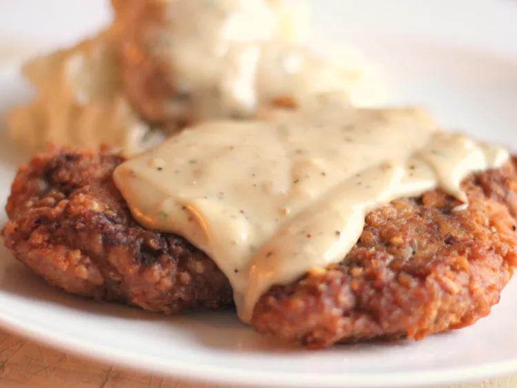

Chicken

Description
Chicken Ingredients
- 4 (1/2 pound) beef cube steaks
- 2 teaspoons baking powder
- 2 ¼ cups all-purpose flour, divided
- 3 cups vegetable shortening for frying
- 4 cups milk
- 2 cloves garlic, minced
- 1 large egg
- 1 ½ cups buttermilk
- 1 tablespoon hot pepper sauce (e.g. Tabasco™)
How to Make Chicken Step-By-Step
- Heat shortening in a deep cast-iron skillet to 325 degrees F (165 degrees C). Place a wire rack over a sheet of parchment paper.
- Place steaks between 2 layers of plastic and pound to a thickness of 1/4 inch.
- Place 2 cups flour in a shallow bowl.
- Stir together baking powder, baking soda 1 teaspoon pepper, and 3/4 teaspoon salt in second shallow bowl. Add buttermilk, Tabasco sauce, egg, and garlic; stir to combine.